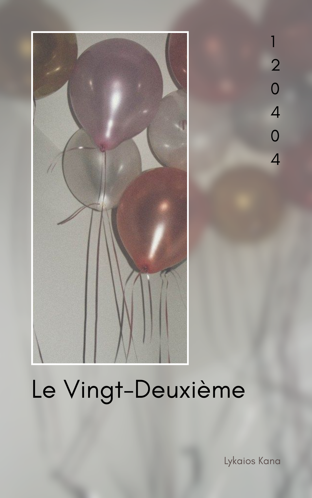

By Lykaios Kana
So in this book, basically I made 22 chapters of mini novels. Why 22 chapters? It's your age. So... hehe.
Anyway, in this book, especially the story, it's my take on your alternative universe. For things that you might like or lose, things you might love or dislike, things that are main characters in your life or just passing moments.
Some chapters might feel close to you, some might feel completely unfamiliar. But that’s the point. An alternative universe is full of possibilities versions of you, choices you didn’t take, and moments that could have happened in another timeline.
Some parts might feel oddly accurate. Some parts might feel completely wrong. If that happens… please remember that this is fiction and I am not responsible for any emotional damage. Thank you.
Also, if you find a character that feels suspiciously similar to someone you know… no you didn’t.
And if you find a character that feels suspiciously similar to you… well… maybe a little.
But mostly, this book is just a collection of tiny stories made for fun. Think of it like opening random doors into different versions of your life. In one universe you might be doing great things, in another you might be making questionable decisions. Both are equally entertaining to write.
Think of this book as a small collection of "what ifs."
What if life went a little differently?
What if some feelings were said out loud?
What if some moments lasted longer than they should have?
Instead of making this book just “for you”, I decided to make it “about you”.
Not everything in this book is meant to be taken seriously. Some parts are dramatic, some are soft, some are just there to make you smile a little.
But overall, this book is simply a birthday gift.
A small universe, written just for you.
And if you ever reach the last page and think, “Why would you write something like this?”
because it's your birthday
Happy Birthday